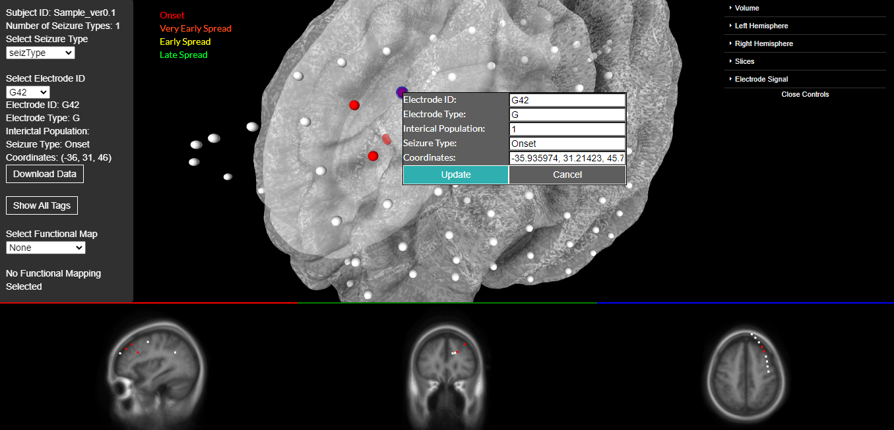

N-Tools-Browser is a web-based neuroimaging tool developed with the X-Toolkit (XTK). XTK was developed by Dr. Daniel Haehn and is built upon WebGL, which allows 3D rendering in web applications. Load subjects "fsaverage" or "fsMNI" in UMB mode to view samples.
N-Tools-Browser is a development of a project first conceptualized by Dr. Jingyun "Josh" Chen and Dr. Daniel Friedman at New York University. The goal was to create a browser application for clinical researchers and epilepsy specialists to visualize electrode data on a 3D brain surface and 2D MRI scans. Our team developed the prototype with members of the Machine Psychology group at The University of Massachusetts, Boston.
At this time, N-Tools supports reading and updating electrode data from a JSON file. The 2D MRI scans are loaded from NIfTI files, and the 3D hemispheres are FreeSurfer meshes. The user can then toggle between different seizure type views, select electrodes, either by clicking or using a menu, and display connections between electrodes.
Our team is also beginning to work on new functionality for editing electrodes, and displaying electrode signal over time. We are also implementing a standard JSON format which will be compliant with the Brain Imaging Data Structure (BIDS) standard for storing and describing neuro-imaging data.
The other contributors to N-Tools can be found below.